Posts
Last fall, my climbing partner Nate was exploring the area around Jewel Pinnacle in the Red River Gorge when he spotted a large wall off in the distance. After improvising an approach, he discovered a handful of appealing cracks. The cliff had no indications of previous climbing traffic. Excited to possibly nab a series of first ascents we put it on the back burner and were unable to return until this past saturday (July 13, 2013).
The approach wasn’t an epic, but it wasn’t a hike either. The best way to describe it is to cross the Red River as if you were approaching Jewel Pinnacle, and then head West rather than South toward Jewel Pinnacle. The cliff is located past the third and largest drainage while heading West. Approach time will vary based on the chosen route, but I would allow for up to an hour each direction depending on the time of year (less if it’s fall/winter due to visibility and less thrashing). It is a large cliff, capped with a moderate roof on it’s North facing side. We would later discover that it is plainly visible from KY-715 and can be identified by the smaller roof that caps the main dihedral that we would eventually climb.
 Estimated location and approach of the unnamed cliff, drainages in blue
Estimated location and approach of the unnamed cliff, drainages in blue
After arriving at the cliff, we were disappointed by many of the cracks. Nate’s memory hadn’t served him accurately in all circumstances. A few were smaller than had been previously believed, and many others were predominantly wide with questionable rock quality at the base. After an aborted attempt to climb what looked to be clean crack, Nate traversed up a strange pitch with "horse heads" on it to reach a ledge covered in bird droppings. After I cleaned the pitch, and carefully avoided a histoplasmosis-covered boulder, the owner of the ledge paid us a visit. We made haste and rigged a rappel. There were no signs of gear on the ledge and we discovered no other obvious way down. If we had to grade it, I think we agreed on 5.7.
 Our avian companion and the contrived first climb
Our avian companion and the contrived first climb
Disheartened by the perceived lack of quality in many of the other routes that the cliff afforded us, we decided to go all in for the main prize: the intimidating and tall main dihedral. From the ground, we surmised that a potential route to the top the cliff existed by traversing out from the roof at the top of the crack and gaining a short crack system that would lead us to the top. Nate is a stronger climber than I and it was his discovery, so he racked up and began progressing up the climb.
 Looking up at the climb from the ground
Looking up at the climb from the ground
 Nate racking up for the climb
Nate racking up for the climb
Despite some questionable rock low down, the climb took good gear further back in the rock. The right side was featured with some pockets which provided helpful hand and foot holds. Nate placed a handful of deep #1 and #2 C4’s in the crack before he stopped.
"F#$k!" Nate yelled.
"What is it?" I inquired after a brief pause.
"Cold shuts. Very rusty and old cold shuts." He replied.
 The first set of cold shuts
The first set of cold shuts
Our first ascent dreams seemed dashed. These anchors were only approximately half way up the climb, so Nate pressed on. After negotiating a challenging wide start with relatively featureless rock and circumnavigating a healthy tree that guarded the crack, Nate once again was greeted by two cold shuts right below the roof.
 The second set of cold shuts - a #.75 C4 fits nicely into the pocket above
The second set of cold shuts - a #.75 C4 fits nicely into the pocket above
Nate backed up the rusted cold shuts with a few pieces of gear nearby and brought me up. Once at the belay, I used a bomber #.75 C4 placement to backup the anchor and we organized and discussed the climb so far and the potential continuation of the climb. We had questions. Who placed these cold shuts? When did they place them? Why did they place intermediate anchors when a gear belay was readily available and when the route clearly continues? Why is there no record of this cliff or route that we are aware of?
While hanging at the roof belay, Nate pointed out a particularly precarious looking block. After inspecting it and testing it, I realized it was entirely detached and teetering on the horizontal ledge. I began to find all manner of small and medium sized blocks to clear off the ledge, though one in particular was the clear winner. Taking into consideration our interest in the traverse roof pitch and the unlikelihood of any unsuspecting victims below we decided that cleaning the horizontal ledge was a logical next step. Thus, I began trundling away. The largest block made a satisfying thud that echoed across the valley as it implanted itself into the soft soil below.
 This block sat teetering on the ledge used for the traverse
This block sat teetering on the ledge used for the traverse
Having completed the house keeping, we turned our attention to the elephant in the room: were we going to do the traverse or call it quits? I had no interest in leading the traverse - the fear of the unknown got the best of me. Nate had bigger plans. After ample safety-related discussion, Nate began the traverse.
After placing a draw into the anchor itself as Nate’s "first piece" to avoid a fall directly onto my harness, he carefully progressed toward the edge of the roof. A fiddly #3 C4 placement in the somewhat flaring upper crack was his first piece of protection and it wasn’t confidence inspiring. The flaring edge that provides hand holds vanished about halfway out the traverse, and Nate was left with nothing except a small one to two finger pocket that could potentially take a small tricam (black or pink). However, this was also the only feature that could be considered a hold at this portion of the traverse and ended up being the key to the sequence for me. After expressing disdain for his lack of racked tricams, he decrypted the moves using the tiny pocket. Nate completed the beginning of the traverse, found a remarkably questionable placement for a #1 C4, and was comfortably resting on a decent hold directly on the corner that marked the end of the roof.
 Nate relaxing and soaking in some exposure
Nate relaxing and soaking in some exposure
Out of my sight and almost out of earshot, all I could do was death grip the brake strand when the rope was still and hope things were going well. Nate’s next piece was a #2 Master Cam which, while better than the #1 C4, was still not a perfect piece. It wasn’t until Nate committed to traversing even further right that he finally found a bomber #5 C4 placement. After negotiating a particularly dirty bulging ledge traverse, Nate reached a tree that marked the bottom of the top of the cliff, built an anchor, yelled off belay as loud as he could, and breathed a sigh of relief.
Down below the roof, still hanging in my harness, I, too, breathed a sigh of relief. My calm was interrupted once the rope came taught and it was my turn to do the traverse. Perhaps it was the adrenaline, but I made quick work of the exposed opening moves. When I arrived at the #1 C4 placement, I was in awe of it’s terribleness. It was in an angling horizontal barely deep enough for all four lobes to touch rock and a crack on the rock above the horizontal pointed right at the cam. After the excitement of breaking off a hand hold and complaints of the dirty final bulging traverse, I joined Nate at the tree belay. A quick double rope rappel (a single 70m would be insufficient) off of two solid trees put us on the ground and the ropes soon joined us on terra firma.
 Not a bad view
Not a bad view
My respect and admiration goes to my partner and professional badass Nate W. for keeping it together on the traverse pitch. I wouldn’t hesitate to lead the lower pitch(es), but the sketchy pro on the traverse is pushing a bit beyond my current comfort zone. We avoided discussing grades until the end of the day. After considerable debate, I believe we consider it 9/9+. It’s hard to grade a route like this, so all we were left with was comparisons. It seemed considerably harder than many of the 9’s I have done and seemed to straddle many of the 9+ routes. The offwidth section is challenging, and the traverse sequence was not easy either. I was mono’d into the small pocket palming on a sloper at one point with feet I could not see. As for the gear - great until the roof, then at least PG-13 if not R. There is gear, but it is very questionable. A fall would result in a swing into the opposite side of the wall which could lead to a broken ankle or leg.
We had fun, and convinced ourselves that the traverse pitch was potentially a first ascent, given the number of blocks we cleaned. It would be very difficult to use the ledge while it was covered with loose blocks. The cold shuts beneath the roof showed rust despite being very protected, while the lower cold shuts were flaking, so we know that their history is far from recent. Thus, we have questions, for the most part purely to satisfy our own historical curiosities.
- Does anyone have any record of this cliff or route?
- Who placed the cold shuts?
- When did they place them?
- Why did they place intermediate anchors when a gear belay was readily available and when the route clearly continues?
Any speculation or insight is welcomed!
Moving up in the world: Climbing Mt. Rainier
[Category: Climbing] [link] [Date: 2011-06-05 21:18:45]
Preface
An elemental part of me has always been attracted to mountains. To me the sight of a snow-capped peak symbolizes a certain level of wildness and commitment to adventure that other environments rarely provide. Last spring I hiked an extended section of the Appalachian Trail in Maine. Preparing for the trek gave me focus and a desire to progress forward. Months after I completed my walk in the wilds of Maine, I began to sense a void in my life. I had nothing that I was moving toward. My success on the trail inflated my ambition and I was soon pondering a more committing, audacious adventure. I wanted to move up in the world and test myself on a true mountain. Something with glaciers, bulk, and formidable size. This eliminated anything in the east, and I eventually ended up throwing caution to the wind and focusing on the most glaciated peak in the contiguous United States: Mount Rainier.
Last December I received a note from an old high school friend who invited me to go skiing. I obliged, and it took less than 15 minutes for me to blurt out the details of my next adventure. The excitement was likely apparent as I outlined my intentions, and there was evidently enough energy behind my descriptions to convince Matthew to join me. Up until this point, I had been operating under the pretense that I would be pursuing this objective alone. A majority of my friends lack interest in such activities, or cannot afford them. Matt was the rare case that didn't fall into both categories.
With a new goal in mind, I began to prepare. It took many months to schedule everything, purchase necessary gear, and physically train for the climb. As a somewhat excessively detail-oriented individual, I tracked all expenses, purchases, and dates with the utmost care. I can tell you exactly how much I paid for the entire trip, to rent gear, or to purchase food. This is a process that I go through so as to not mask the true cost of such adventures. It's easy to lose sight of the expenses these trips incur since the costs are distributed over long periods of time. Organization pays off in other ways as well. I returned and exchanged many items that I purchased, and the organization of receipts and tags made this a smooth process.
Training was considerably more rigorous than my plan for my wilderness trek. I ran 3-4 times a week, sometimes for an hour. I also began to do more technical climbing in a nearby bouldering gym to work on core and upper-body strength. I dislike going into any activity entirely blind, so I arranged to take two mountaineering courses through Eastern Mountain Sports (EMS) that also included an ascent of Mt. Washington in February. I learned all of the basic mountaineering skills and felt much more confident about all the technical aspects of the larger climb to come. Once the time came to leave for Seattle, I was in the best shape of my life. My scrawny 130lb body had bulged to almost 150lbs.
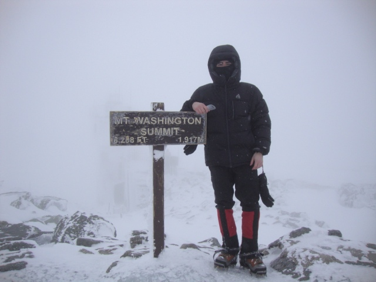
To prepare, I took a few mountaineering classes and climbed Mt. Washington in FebruaryOur flight departed from Cincinnati around 9:30AM, and we landed at a mere 10:42AM in Seattle due to the three hour time change. We were shuttled to and from the airport by Luis and Mike (respectively) who both work for the Bellevue branch of the company that I work for. This saved us the monetary hit of renting a car, but it severely limited us in terms of mobility once in Ashford. After checking into the bunk room at Whittaker's Bunkhouse, we began our first stretch of boredom. We had flown in with a day to spare, since I had planned on one buffer day on each side of the trip. We learned to play a card game named Cuarenta (forty), and even made our own variation of it. Even so, the next few days dragged on forever. After we picked up our rental gear I remember looking at one another and then Matt saying "Let's just go up! We have all the gear!". Every hour or so we would go outside to scan the horizon and look for any signs of The Mountain, but it never revealed itself among the ever-present blanket of clouds that brought such unpredictable weather to Ashford.
Back to school
When participating in a Rainier Mountaineering (RMI) guided program, it consists of an orientation, a snow school, and the climb itself. At the orientation, the guides give an introduction to the program and verify that the team participants have the necessary gear. Each participant also introduces themselves to the group. The experience of individuals varied, but I was happy to find that I didn't identify anyone that I was concerned about. Numerous participants were marathon (and ultra-marathon, mind you) runners, and a handful had prior climbing experience as well. After everyones gear was thoroughly inspected and approved, we all retreated to our rooms and anxiously waited for the following morning to come when we would finally get on the lower slopes of the mountain.
Before RMI lets you haplessly wander up the mountain, they require that program participants complete a one day snow school that covers the basics of mountaineering. This considerably lowers the liability that clients may pose to guides and themselves once they are roped up on the more dangerous slopes and glaciers found on the upper reaches of the mountain. I enjoyed the training day, and the only new skills were those involved in rope travel. During the training we got our first glimpse of the upper mountain through a break in the clouds. It elicited both excitement and apprehension.
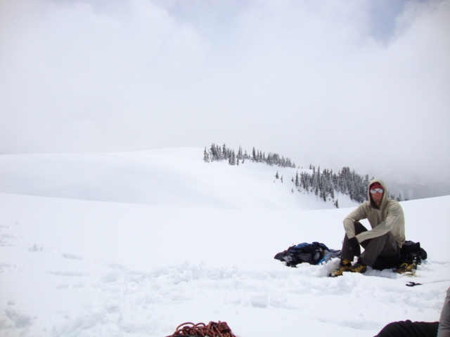
Snow school with Thomas (pictured) and JJOur group appeared strong. The amount of praise being distributed to our two teams was seemingly excessive, but I agreed that we all seemed focused and dialed in to our objective. The day ended by walking down to the parking lot in crampons. After the days conclusion, there were some final words from our guides before we were released to relax and mentally prepare for the next two grueling days. I opted to consume the majority of a pizza on my own, where I saw the somewhat famous Peter Whittaker. He seemed occupied, so I stayed focused on my food while he drove off in what I believe was a Chevy Cruze.
The climb
Still yet to fully adjust to the time change, I was up well before it was necessary to be on the first day of the climb. I took my time packing and eating then relaxed for a short while before gearing up and heading out. The weather was looking bleak in Ashford. I had let go of the annoying concept of using garbage bags for my gear, but a small fear of moisture grabbed hold of me as the guides seemed to advocate the use of a garbage bag. I grabbed one but never used it. The drive up to Paradise yielded ever-improving conditions until we were free of any precipitation. We left the parking lot with low visibility. After only an hour, the heat was oppressive and everyone was down to their base layer and climbing pant. As the morning turned to the early afternoon we progressed upwards by placing one foot in front of the other thousands of times. Each step up revealed more of the mountain, and the skies cleared to give us a clear look at our objective. Eventually, Camp Muir was visible and it seemed to be mere minutes away. At such a large scale, and with few reference points, the distance was misleading. It took over a half an hour to reach the small cluster of buildings that seemed so close.
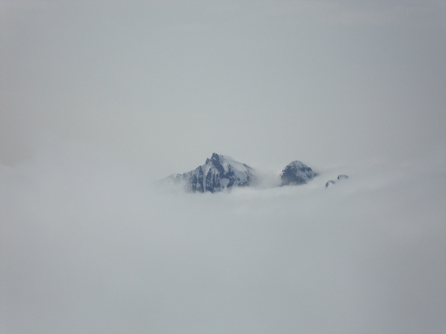
The peaks of the Tatoosh range often pierced the veil of clouds
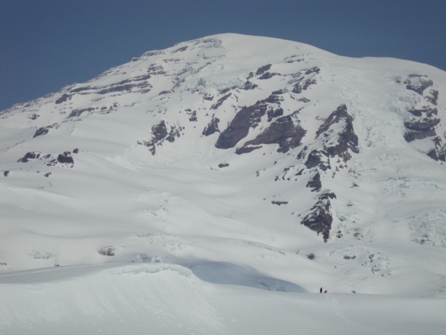
Our first full-featured view of Mt. Rainier while hiking up to Camp Muir
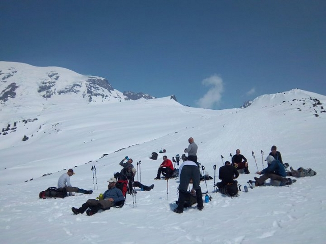
Resting between pushes up to Camp Muir
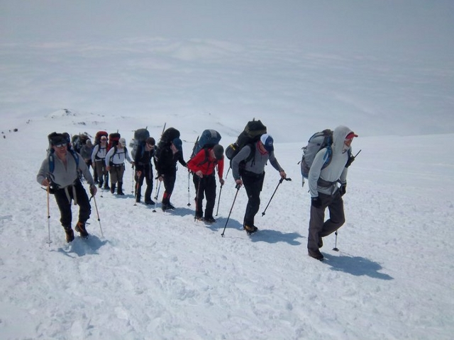
Our team was moving like a well-oiled machine
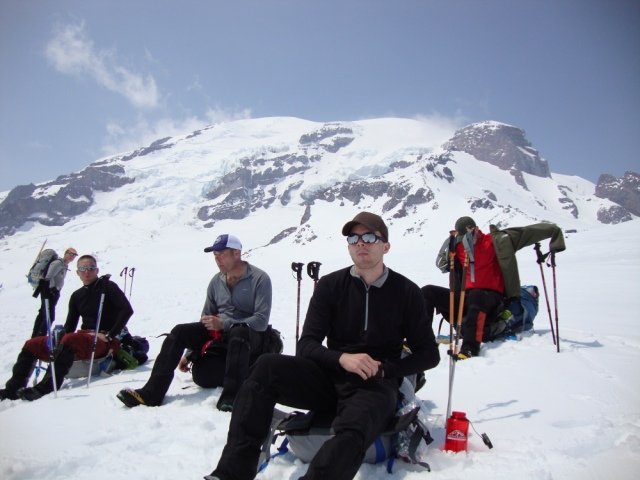
Taking one of our final breaks before reaching Camp MuirThe first hour at Camp Muir was somewhat confusing. Part of you wants nothing more than to drop your pack, lay down, and rest. Not necessarily because you are tired, but because you know that you've just done the easy part and every bit of energy you can conserve will improve your performance for the climb through the night. On the other hand, you want to drink lots of water, eat food, unpack your backpack, make a claim of where you will "sleep", go over what gear you'll need, re-pack your backpack, choose your snacks, dry your socks, and so many other little things. Being the near obsessive compulsive individual that I am, I kept busy by making lists and shifting my packing strategies to accommodate the oncoming summit attempt.
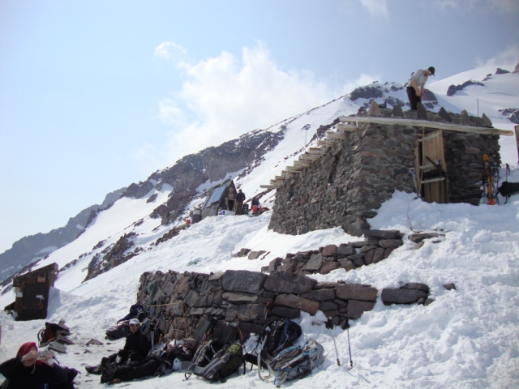
The stone buildings of Camp MuirMy choice for dinner was macaroni and cheese. I should have stuck with my more standard ramen noodles with a bagel. Either way, there was the issue of what to do with the extra liquids from my meal. The hardcore way is to drink any excess from your food preparation. After some repeated gagging I had most of my hyper-diluted, orange-tinted, now cold cheese water out of the picture. I should have utilized my cooking system from Maine wherein I simply cooked in a thick quart-sized plastic bag and ate out of it. Any remains you did not want were simply stored in the re-sealed bag. I'm not sure what prompted the sudden change. Luckily, I had brought a peanut butter bagel which I enjoyed thoroughly.
Early after arriving at Camp Muir I had made my bedding claim to the least accessible bottom bunk space that was closest to the door. I had foolishly brought a rather aggressively rated sleeping bag and was concerned I was going to fry given the small volume of the bunk house. It was hard to access, but I could still get in and out without stepping on someone. I also had plenty of extra room to dump gear I deemed impossible to leave outside. I did as much as I could to prepare for the final leg of the climb, and once 6pm rolled around everyone began the desperate process of trying to gain some strength by attempting to sleep. Most of us had drank an unearthly amount of water to re-hydrate and combat the effects of the altitude. It came as no surprise that every five to ten minutes the door to the bunk house would open and drag across the iced entrance floor. While there was no true sleep, there were stretches of time that I could not account for where I was in some ill-defined no man's land between consciousness and sleep.
The door flew open and the sound of numerous pairs of hard mountaineering boots alerted everyone that this wasn't a weary sleep-deprived climber returning from one of the now standard restroom breaks. It was a bit after midnight and the time had come. I was not feeling fantastic, but I felt well considering I seemed to have shaken the headache I was grappling with when I first arrived at Camp Muir. I managed to consume a dual serving of oatmeal in the hut, though it wasn't easy. I stepped outside into the dark. The flurry of motion was evident in the gleaming white LED-powered beams that were darting from side to side as climbers prepared their backpacks and roped up. A little past 1AM all of the teams began their march upwards.
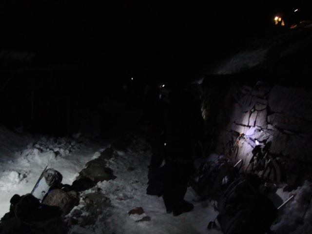
The ground danced with headlamp beams as we all readied to climb through the nightThe first hours went by with disturbing haste. At night and in the dark, my world was reduced to a small sphere illuminated by my headlamp. Every so often I would power it up to it's maximum capacity only to have the light swallowed by an unmentionable void. Our team would verbally reassure each other sporadically, though we seldom communicated. Only when some hazard posed a threat to climbers behind us was the silence broken. It became colder and colder, and soon I was regretting my decision to deviate from my original plan to use a mid-weight pant base layer on summit day.
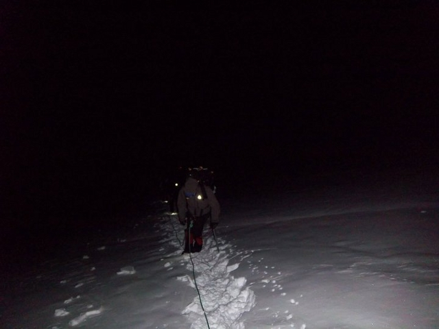
A weary climber (me) side-stepping up a moderate slope in the darkness of night (Photo by Kel Rossiter)
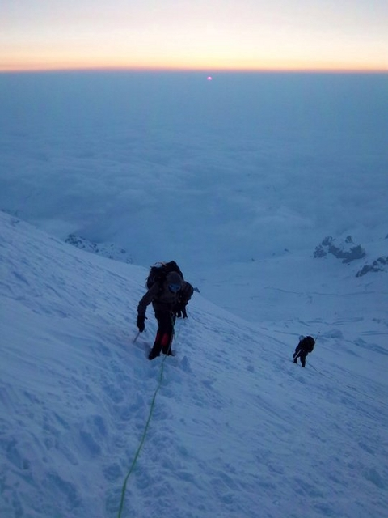
Dawn eventually came and brought some much-desired warmth to some chilled climbers (Photo by Kel Rossiter)
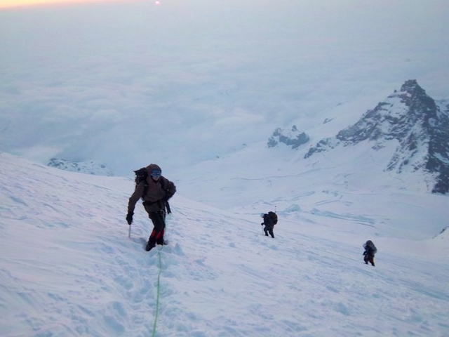
There's only one place to go: up! Me with Little Tahoma featured in the background (Photo by Kel Rossiter)Eventually, the darkness yielded to dawn. The ambient light seemed to change hue and intensity by the minute as the bleached white landscape shifted between shades of blue, gray, and soft orange. My world steadily grew until the sun was above the horizon and I could see the grand scale of the mountain. We had progressed upward further than any other team in the past week had managed. Without an established route past approximately 12,000ft, the teams in the lead were required to kick steps to establish a safe path to move upwards on. Forced to take our high break early by a sizable crevasse above 13,000ft, we sat down for what would become a rather extended break. The snow bridge that had provided the safest crossing was decaying rapidly as climbers worked their way up it.
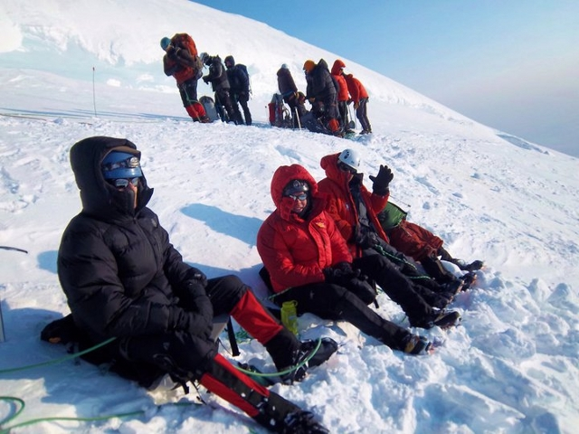
We take a rest at high break (me on the left) (Photo by Kel Rossiter)While sitting down during our extended break, many other climbing teams began to enter the queue from other guiding agencies. Jokes likening the scene to the Hillary Step on Everest began to circulate. At one point I decided to put my hard shell pants on, which proved to be a mistake as the effort it took and the body contortion required to put them on ended up involving what felt like an inordinate amount of energy expenditure. Then our turn came on the crevasse. When I received the signal I made my first attempt to make the initial high step onto the bottom of the other side of the crevasse. The foot hold disintegrated as I placed weight on it. For my second attempt, I wrapped my arm around the fixed line that had been placed, which ended more successfully. My glasses had now fogged and I could hardly distinguish details in the white in front of me. My hard shell pants had sagged down below my waste and I suddenly felt less than comfortable, but was glad to have the crevasse behind me.
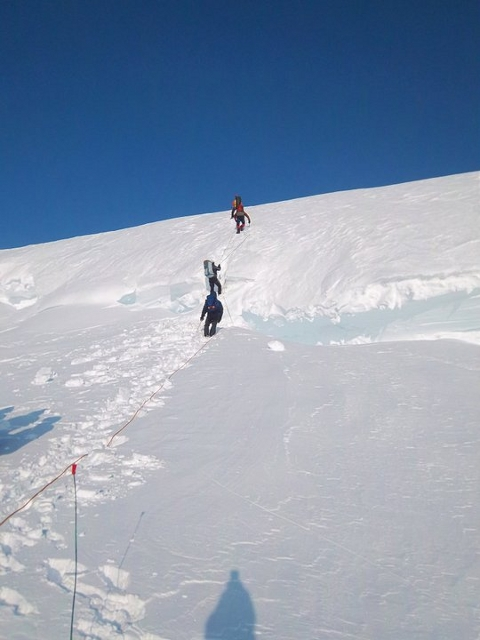
This is what the large crevasse above 13,000ft looked like (Photo by Kel Rossiter)I watched the rest of my rope team proceed safely across and up the obstacle as I was transferred in, out of, and between prusiks, lines and anchors in order to be safely secured. I had brought only one locking carabiner, which turned out to be a regrettable decision on more than just this occasion. Not far after the crevasse the weather turned sour as winds increased and visibility dropped. After pushing on for another half an hour the radio crackled and we learned that a climber had punched through a hidden chasm up to his waste. With all the variables stacking against us, the guides made the executive decision to turn around.
For the most part, our descent was without incident and the teams arrived back in Camp Muir after getting blasted by some moderate winds just prior to passing through Cathedral Gap and onto the Cowlitz Glacier. Knowing that we had a limited amount of time at Camp Muir, I focused on re-hydrating and preparing my gear for the descent down to Paradise. We learned that numerous other teams were in very reduced visibility and high winds. Their descents took hours longer than ours, even though they had only proceeded an extra few hundred vertical feet. Despite no one tagging the top, the mood seemed positive. Everyone was safe, and no one could say that their trip was without adventure. The descent down to Paradise was quick, only taking a bit over two hours.
The shuttle took us back to Ashford where there was a ceremonious presentation of certificates to everyone who had participated. Then it was over. All the planning, effort, and training I had focused on in the past months had coalesced into what happened over the past 30 or so hours. We would pass the remaining time in Ashford slowly as we waited for our ride back to Seattle for our red eye flight the next day.
Afterthoughts
Most important to me is what I would do differently based on what I learned from this climb. The easiest way to organize these changes is in bulleted form. I would...
- Purchase a buff for $20 (it just seems too versatile to not have)
- Bring my own tent to relax and sleep in (as crazy as that sounds)
- Use another insulating layer such as a light primaloft jacket in place of the soft shell
- Return to my now-standard food plan and cook in disposable bags to make trash/waste management easier
- Stick with the normal fatty/salty options that I have utilized in the past for snacks
- Schedule the flights with less buffer time
- Bring more things to occupy free time
- Utilize dry bags for any important items that couldn't get wet and ditch the garbage bag concept entirely
- Add a bit more to my rack such as a a few extra lockers and slings
- Use water bottle insulators to keep the liquids from turning to slush (which made it hard to stay hydrated)
- Consider bringing a mid-weight base layer pant
Most of my outdoor experiences have been in the company of only myself or few others. I was taken aback by the number of people moving up and down the mountain. Camp Muir was busier than a city bus stop. One of the primary reasons I go outdoors is to feel distant from everything normal and safe in everyday life. Increasing my distance from people, work, and the comforts of modern life leads to a simplification unlike any other I have found. Unfortunately, the brevity of the climb and the proximity to others detracted significantly from these feelings I have come to seek over the past years. This isn't to say that I was in any way disappointed with the experience, nor is it saying that I would not pursue anything similar again.
To me, climbing is about learning. Whether it's a single pitch sport route or a week long expedition to a craggy peak. From a distance, it may appear that physical strength forms the basis of a good climber. The truth, I believe, is that the game is more of a mental exercise than anything else. Planning, preparing, and progressing forward requires mental resolve above all. I didn't make it to the top, and neither did any of the other climbers that day. It would be rash to say it was a waste of time when considering what was achieved. Early on, after I made the decision to climb Rainier, I resolved that I would much rather have an unsuccessful climb that was adventurous and challenging than a stairway to the summit, and I am happy to have received just that.
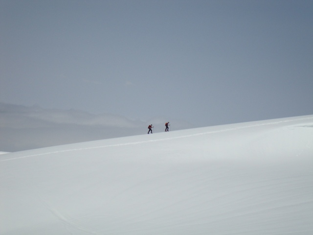
Goodbye, Mt. Rainier!If you enjoyed my account of climbing Mt. Rainier and have copious amounts of free time consider reading my entries about my hike of the 100 mile wilderness in Maine. Many of the pictures I used in this log were taken by Kel Rossiter of Adventure Spirit Guides. Guide Jeff "JJ" Justman also used a GoPro helmet cam to capture some of the climb, view it on his facebook page here.
JVC Everio GZ-MS110, Ubuntu 10.04 and AviDemux
[Category: Hardware and Electronics] [link] [Date: 2011-02-09 23:12:00]
Last summer I purchased a webcam from Best Buy and quickly found myself generally appalled at the quality. I wish I had known then, but the best bet nowadays for creating quick videos is likely a camcorder. Once I had come to realize this, I started keeping an eye out for cheap camcorders. I lost interest until recently, when I decided that I would need one to enter a contest that involves the submission of a two minute video. After a week of research I had gotten nowhere. Every camera I would find would have the same average weighted rating which fell somewhere between amazing and desperately inadequate. I gave up and just decided to choose a camera that had the features I needed and go from there. I'm not making the next Avatar here.
I eventually found a JVC Everio GZ-MS110 that was on sale for $130. It had the basic feature set that I wanted including a time lapse function and the ability to swap out SD cards. I purchased it at a local HHGregg (first item I ever purchased from this store -- I have no complaints). I'm not going to thoroughly review this camera, but I do want to go over a few tricks to get better video output from these cheap camcorders on Linux (though the same techniques should apply to other operating systems).
 It's not much to look at, but it's as compact and light as they come
It's not much to look at, but it's as compact and light as they come The most annoying aspect of nearly all camcorders that aren't HD ready is that they will, almost without doubt, not support recording progressive scan video. Deinterlacing becomes a must when dealing with video from these sources. The second peeve I have is that they can't seem to use logical storage formats and containers. JVC cameras create MOD and TOD files which are truly MPEG2 data with AAC audio, but a lot of lesser video players struggle with them. It appears that the way their header data is stored all but hides the aspect ratio the file was recorded with (with the GZ-MS110 you can choose 4:3 or 16:9) which causes many players to display the file incorrectly. Luckily, most media programs on Linux have some relation to ffmpeg or gstreamer, both of which seem to read these files properly. I had no issue transferring these files. I tested the mini-USB port on the camera and Ubuntu 10.04 recognized the device as a MSC controller giving me access to the files. I also was able to simply remove the SD card and read the data that way. I enjoy devices that work simply like this, which is why I also enjoy my Creative Zen X-FI 2.
Rather than go through the motions of explaining how I process the video from this camcorder with long ffmpeg commands, I thought I'd show how to do it using AviDemux. This is useful if your goal is to put these videos onto sharing sites like Facebook, YouTube, or Vimeo as well as if you are looking to do some basic editing with the output. If you're on Ubuntu, you can get it through the software, if you're on a Debian-based distribution you can likely get it using the following in a terminal:
$ sudo apt-get install avidemux
 Quick overview of some settings to get clear output from AviDemux
Quick overview of some settings to get clear output from AviDemux AviDemux will read the MOD files and build an index of the frames (click yes when it asks). For my purposes, I plan to edit the clips on my computer and have chosen to use a lossless video codec (Huffyuv). Unfortunately, AviDemux does not currently have FLAC support which would be my choice for audio. I lowered myself to use a very high quality MP3 since it's very compatible with most programs. You could choose to use a PCM waveform as well. If you need the file size to be smaller, I suggest using an XviD or H.264 profile. The important part happens with the filters. The order of these are important. The first filter I use is the yadif filter (Yet Another DeInterlace Filter), followed by a sharpen, and then a resize down to 640x360. This resize is not necessary and many would say that I am degrading the quality by doing so. I find that the bilinear re-sampling actually removes a lot of noise from the output.
 Uncompressed versions for comparison:
Uncompressed versions for comparison: {kind=link}
{kind=link}
I am satisfied with the results. For only twice as much as I paid for a webcam I have made leaps and bounds in terms of quality. Not to mention it's a lot easier to interface with. Other comments on the camera: The sound recording on it is better than I anticipated and it handled loud music in a car easily -- this camera may be a good investment for concert filmers. The battery on it lasts only an hour, despite claims of lasting up to two. I have lowered the LCD brightness as much as possible with little gain in recording time. Some quick research showed that an extra battery was -- at the cheapest -- $60! That's nearly half the price of the camera. In conclusion, the JVC Everio GZ-MS110 is definitely a budget standard definition camera, but I can't see why most users wouldn't find it a good deal for the prices it is available for. If you don't need zoom and time lapse capabilities, the Flip Ultra HD is by far one of the best camcorders for online socialites interested in posting videos onto YouTube and Facebook.